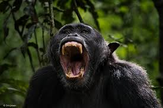
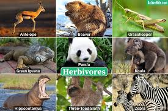
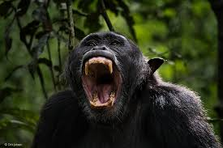
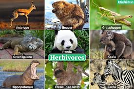
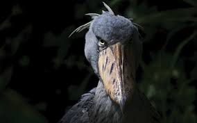
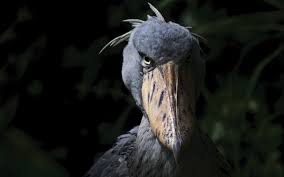

Wildlife & Projects
Uganda's Wildlife
Discover the rich biodiversity of Uganda, including mammals, birds, reptiles, and endangered species.
Mammals
Uganda has a wide range of mammalian species across its national parks and protected areas. Some notable ones include:




Mountain Gorillas:
Uganda is famous for its mountain gorillas, especially in Bwindi Impenetrable National Park and Mgahinga Gorilla National Park. Uganda is one of the only places in the world where you can see these endangered primates in the wild.Big Five:
Uganda is home to several members of Africa’s “Big Five” — elephants, lions, buffalo, and leopards, which can be found in Queen Elizabeth National Park, Murchison Falls National Park, and Kidepo Valley National Park.Chimpanzees:
Uganda has a significant population of chimpanzees, and you can see them in places like Kibale National Park, which is known as one of the best spots for chimpanzee tracking.
Antelopes and Gazelles:
Uganda has various species of antelopes, including impalas, kobs, topis, and duikers. These are commonly seen in savanna habitats, such as in Queen Elizabeth National Park. Other Wildlife: Uganda is home to other animals like zebras, giraffes, hyenas, crocodiles, hippos, and a variety of smaller mammals such as mongoose, civets, and warthogs.
Birds
Uganda is a birdwatching paradise with over 1,000 bird species recorded, including a range of both migratory and endemic species. Some of the top bird species to spot in Uganda include:



Shoebill Stork:
Found in the swamps of Murchison Falls and other wetlands, the Shoebill is one of Uganda's most iconic birds.
Uganda's National Bird - The Grey Crowned Crane:
This beautiful bird is often seen in wetlands and grasslands.Endemic Species:
Uganda has several endemic bird species such as the Green-breasted Pitta, the Blue-headed Coucal, and the Uganda Kob, which can be found in specific regions like Bwindi.Reptiles & Amphibians
Snakes:
Uganda has a variety of snakes, including venomous species like the black mamba, puff adder, and spitting cobras, though encounters are rare.
Crocodiles and Lizards:
Nile crocodiles are found in lakes and rivers, particularly in Murchison Falls and Queen Elizabeth National Park. There are also many species of lizards and geckos.
Frogs and Toads:
The country's tropical climate supports many amphibians, including colorful frogs and toads that are often found in the rainforests and wetlands.
Endangered species in uganda
Eastern Black Rhinoceros
Status: Critically Endangered
Habitat: Historically found in Uganda, though no longer in the wild due to poaching.
Threats: Poaching for rhino horn and habitat destruction.
Conservation Efforts: There are plans to reintroduce rhinos into Uganda, and ongoing efforts to combat poaching and support rhino breeding programs.

Rothschild’s Giraffe Status: Endangered (in Uganda) Habitat: Mainly in the north and east of the country, particularly in Murchison Falls National Park and Kidepo Valley National Park. Threats: Habitat loss, poaching, and human-wildlife conflict. Conservation Efforts: Uganda is actively involved in giraffe conservation programs and has reintroduced giraffes to some areas to increase their population.

Rothschild’s Giraffe Status: Endangered (in Uganda) Habitat: Mainly in the north and east of the country, particularly in Murchison Falls National Park and Kidepo Valley National Park. Threats: Habitat loss, poaching, and human-wildlife conflict. Conservation Efforts: Uganda is actively involved in giraffe conservation programs and has reintroduced giraffes to some areas to increase their population.
Conservation Projects
Our key initiatives include anti-poaching campaigns, habitat restoration, and community education.
Get Involved